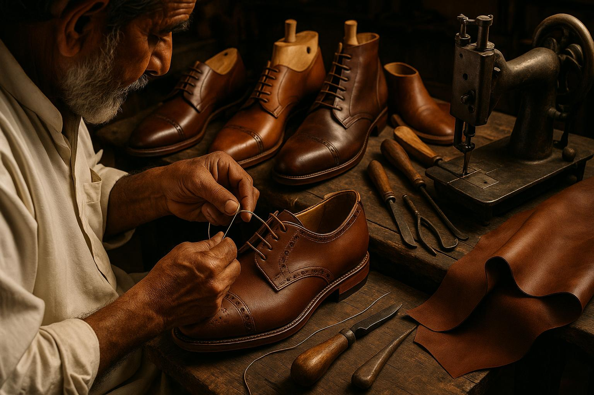

01 / CRAFT
Artisan StandardCraftsmanship
Respect for materials, skilled hands and the details that make a difference.
Leather & Last is a footwear manufacturing partner focused on well-made leather shoes and long-term relationships.
We bring designers, craftspeople and production specialists together to make footwear that feels right, wears well and reflects the identity of the brands we work with. We value honest conversations, thoughtful development and consistency in the details.

Our journey is shaped by learning, partnerships and a steady commitment to doing the work well.
A small team began with a simple belief: quality starts with care.
Expanded product development and strengthened production methods.
Worked with a wider network of retailers and footwear labels.
Continuing to refine our craft and create better ways to collaborate.

A considered workflow helps each team understand what good looks like. We align on the brief, confirm specifications, review samples and maintain quality checks through production.
We begin with your customer, brand and product goals.
We review fit, materials, construction and finish.
We coordinate quality reviews and dispatch details.
Principles forged at the workbench: unhurried care, open transparency, and constant refinement across every pair.
Respect for materials, skilled hands and the details that make a difference.
Clear communication, realistic commitments and responsible decisions.
A willingness to learn, improve and explore better solutions.
Tell us about your brand and what you want to make next.